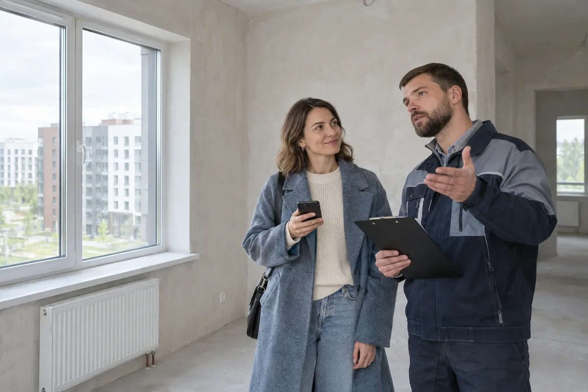
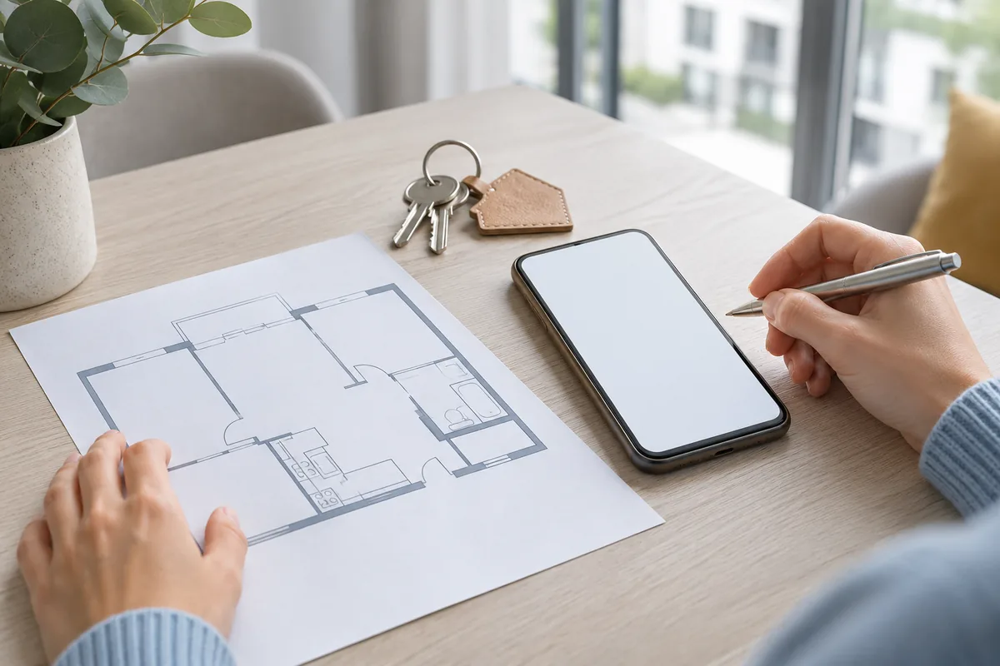
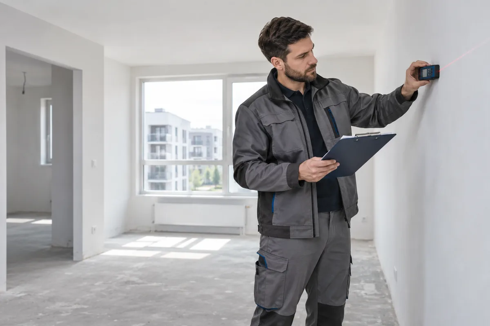

Жилой комплекс и корпус
Название ЖК и номер корпуса из приглашения.
Проверьте дату и адрес осмотра, подготовьте сведения о квартире и узнайте, сможет ли специалист приехать в назначенное время.

Проверьте дату, время и адрес. Если информации о месте встречи или доступе на объект недостаточно, уточните её у застройщика.
Соберите сведения о ЖК, корпусе, площади и отделке.
Проверьте, сможет ли специалист приехать к назначенному часу.
Узнайте, что входит в проверку и какие документы получите по итогам.

Название ЖК и номер корпуса из приглашения.
Нужна для расчёта стоимости приёмки.
Без отделки, предчистовая или чистовая.
Время, назначенное застройщиком.

По итогам осмотра специалист оформляет акт с перечнем выявленных замечаний.
Подробнее об услуге приёмкиЦена от 5 520 ₽ возможна при подтверждённой коллективной скидке 20% для заявки от 15 заказчиков одного ЖК.
Уточнить стоимость и записьСохраните приглашение, проверьте дату и адрес встречи. Затем подготовьте сведения о квартире и уточните, доступен ли специалист на назначенное время.
Укажите дату и время из приглашения. Проверим график специалиста и свяжемся с вами.